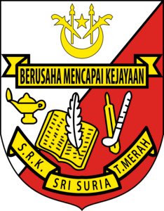
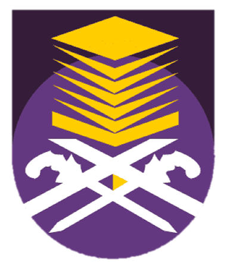

I began studying at Tabika Perpaduan for a year and a half between 2007 and 2008. Here I began to learn to be self-sufficient and to do tasks on my own. At the same time, I got to know my classmates.
I pursued my education in Sekolah Kebangsaan Sri Suria 1 from 2009 until 2014. This is the only school where I attended primary school. This school offered two learning sessions in the morning and afternoon while I was in grades one, two, and three, so when I was in grades two and three, I had the opportunity to learn in the evening session as well as the mandatory Friday morning lesson. Following that, lessons in grades 4, 5, and 6 are held in the morning as normal, with mandatory classes held in the evening sessions every Sunday, Monday, and Tuesday.Furthermore, because grade six is a rather busy year, extra lessons are conducted on the side evenings, nights, and even Saturdays.
Then, from the age of 13 to 17, I pursued my education at the secondary level which is Sekolah Menengah Kebangsaan Dato' Mahmud Paduka Raja 1 from 2015 to 2019. In the morning, the school session resumes as normal. During the exam year, there will be PT3 at level 3 and SPM at level 5. Two very busy years with additional lessons in the afternoon, evening, and on Saturdays.
I was offered a Diploma in Information Management programme at Universiti Teknologi Mara despite having SPM scores that were barely enough to eat. Since the globe was afflicted by the covid-19 outbreak at the beginning of the tenth month of 2020, I began taking lessons for the disciplines that were offered online. Then, in the second round of college admissions for my second semester, I was offered and began to seat in college for free since I was a commander. However, classes will continue to be held online until my last semester, which is the fifth semester.